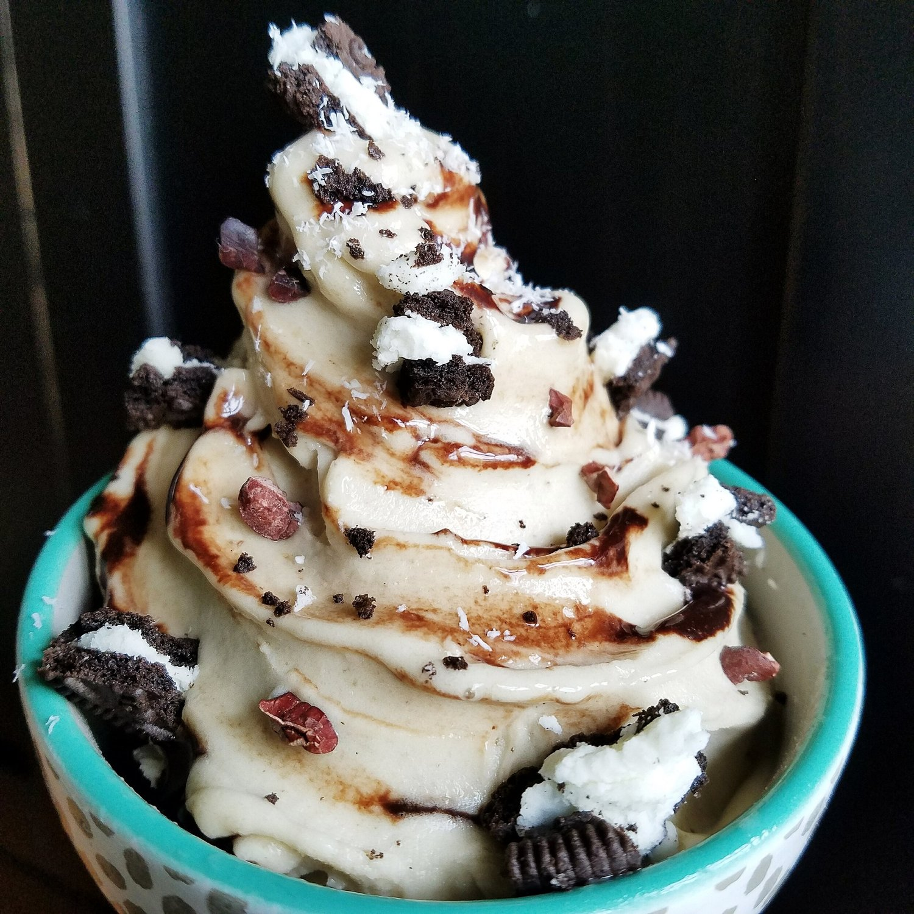

Oreo Banana Ice Cream (vegan, gluten free)
Creamy, dreamy oreo banana ice cream fixed up with all the best toppings. This ice cream is a healthy alternative to store-bought versions full of dairy, refined sugar, and excess fat. This recipe is naturally vegan and can be made gluten free as well! A perfect sweet dessert or refreshing mid day snack.

Do I even need to explain my banana ice cream addiction anymore? I don't think my problem can be defended any more. I'm far beyond gone. I'm pretty certain my Instagram feed is going to become just banana ice cream. Hope you don't mind cause. I mean. Look at it!!
This time, I tried to see what would happen by adding protein powder. I figured it would be even thicker since pea protein highly absorbs liquid. If you're familiar with casein protein, it acts like that!! So...I added COOKIES AND CREAM pea protein. And sure enough. It's thick. I mean, banana ice cream is already really thick to begin with. But this...is so silky and smooth. I am loving all the flavors from truenutrition.com lately. I want to buy them all so baddd. I feel like...knowing my habits...eventually I will. I'll have my own little shop in my pantry, ha. Now taking orders. But really, if you want to try it out (you should), I have a discount code that anyone can use! It's 5% off with the code "PBEECHIE" and I also buy my custom blend oats from their site.
This oreo banana ice cream is a great alternative to buying pints in a store. First, it's ridiculously cheaper. Especially the dairy free ice creams...those can get up to $5 or more just for a pint. Yeahhh...not worth it. Not only does this save money, but it is full of fiber that packaged ice creams do not have! This ice cream does not contain the dairy, refined sugar, and excess fat that store-bought brands do. This recipe is naturally vegan and can be made gluten free as well!
Try it out and let me know what you think of the creamy silky deliciousness.
Oreo Banana Ice Cream
-
3-4 frozen bananas
-
1/2 scoop (15 g) Cookies & Cream Pea Protein
-
Toppings! (oreos, cacao nibs, chocolate stevia syrup)
-
In a food processor or high speed blender, add your frozen bananas and flavored pea protein (I got this from truenutrition.com). If you don't have the protein, add a crushed oreo instead.
-
Blend until smooth! It will be thick and creamy.
-
Add your toppings! Oreos are not gluten free, so if you are gluten free, use an alternative "oreo" brand like this.